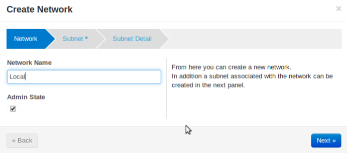
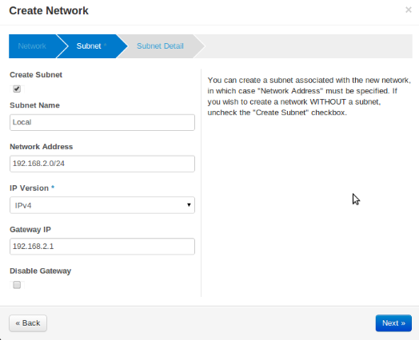
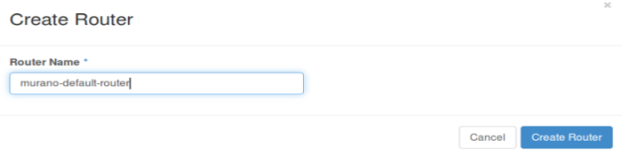
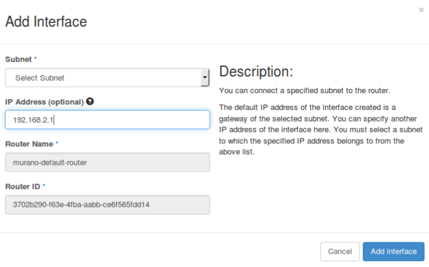
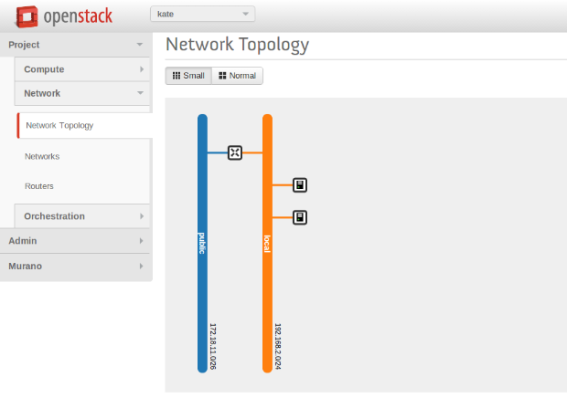

This section provides basic information about lab’s system requirements. It also contains a description of a test which you may use to check if your hardware fits the requirements. To do this, run the test and compare the results with baseline data provided.
Supported Operation Systems
System packages are required for Murano
Ubuntu
CentOS
| Criteria | Minimal | Recommended |
|---|---|---|
| CPU | 4 core @ 2.4 GHz | 24 core @ 2.67 GHz |
| RAM | 8 GB | 24 GB or more |
| HDD | 2 x 500 GB (7200 rpm) | 4 x 500 GB (7200 rpm |
| RAID | Software RAID-1 (use mdadm as it will improve read performance almost two times) | Hardware RAID-10 |
Table: Hardware requirements
There are a few possible storage configurations except the shown above. All of them were tested and were working well.
1x SSD 500+ GB
the HDD and mount the SSD drive to folder where VM images are)
1x HDD (15000 rpm) 500+ GB
We have measured time required to boot 1 to 5 instances of Windows system simultaneously. You can use this data as the baseline to check if your system is fast enough.
You should use sysprepped images for this test, to simulate VM first boot.
Steps to reproduce test:
Prepare Windows 2012 Standard (with GUI) image in QCOW2 format. Let’s assume that its name is ws-2012-std.qcow2
Ensure that there is NO KVM PROCESSES on the host. To do this, run command:
># ps aux | grep kvm
Make 5 copies of Windows image file:
># for i in $(seq 5); do \
cp ws-2012-std.qcow2 ws-2012-std-$i.qcow2; done
Create script start-vm.sh in the folder with .qcow2 files:
#!/bin/bash
[ -z $1 ] || echo "VM count not provided!"; exit 1
for i in $(seq $1); do
echo "Starting VM $i ..."
kvm -m 1024 -drive file=ws-2012-std-$i.qcow2,if=virtio -net user -net nic,model=virtio -nographic -usbdevice tablet -vnc :$i & done
Start ONE instance with command below (as root) and measure time between VM’s launch and the moment when Server Manager window appears. To view VM’s desktop, connect with VNC viewer to your host to VNC screen :1 (port 5901):
># ./start-vm.sh 1
Turn VM off. You may simply kill all KVM processes by
># killall kvm
7. Start FIVE instances with command below (as root) and measure time interval between ALL VM’s launch and the moment when LAST Server Manager window appears. To view VM’s desktops, connect with VNC viewer to your host to VNC screens :1 thru :5 (ports 5901-5905):
># ./start-vm.sh 5
Turn VMs off. You may simply kill all KVM processes by
># killall kvm
The table below provides baseline data which we’ve got in our environment.
Avg. Time refers to the lab with recommended hardware configuration, while Max. Time refers to minimal hardware configuration.
| Boot ONE instance | Boot FIVE instances | |
|---|---|---|
| Avg. Time | 3m:40s | 8m |
| Max. Time | 5m | 20m |
Default KVM installation could be improved to provide better performance.
The following optimizations may improve host performance up to 30%:
The contrib/devstack directory contains the files necessary to integrate Murano with Devstack.
Follow Devstack documentation to setup a host for Devstack. Then clone Devstack source code.
Copy Murano integration scripts to Devstack:
$ cp lib/murano ${DEVSTACK_DIR}/lib
$ cp lib/murano-dashboard ${DEVSTACK_DIR}/lib
$ cp extras.d/70-murano.sh ${DEVSTACK_DIR}/extras.d
Create a localrc file as input to devstack.
The Murano services are not enabled by default, so they must be enabled in localrc before running stack.sh. This example localrc file shows all of the settings required for Murano:
# Enable Heat
enable_service heat h-api h-api-cfn h-api-cw h-eng
# Enable Murano
enable_service murano murano-api murano-engine
Deploy your OpenStack Cloud with Murano:
$ ./stack.sh
First you need to install a number of packages with your OS package manager. The list of packages depends on the OS you use.
$ sudo apt-get install python-pip python-dev \
libmysqlclient-dev libpq-dev \
libxml2-dev libxslt1-dev \
libffi-dev
Note
Fedora support wasn’t thoroughly tested. We do not guarantee that Murano will work on Fedora.
$ sudo yum install gcc python-setuptools python-devel python-pip
$ sudo yum install gcc python-setuptools python-devel
$ sudo easy_install pip
$ sudo pip install tox
Murano can use various database types on backend. For development purposes SQLite is enough in most cases. For production installations you should use MySQL or PostgreSQL databases.
Warning
Although Murano could use PostgreSQL database on backend, it wasn’t thoroughly tested and should be used with caution.
To use MySQL database you should install it and create an empty database first:
$ apt-get install python-mysqldb mysql-server
$ mysql -u root -p
mysql> CREATE DATABASE murano;
mysql> GRANT ALL PRIVILEGES ON murano.* TO 'murano'@'localhost' \
IDENTIFIED BY 'MURANO_DBPASS';
mysql> exit;
Create a folder which will hold all Murano components.
$ mkdir ~/murano
Clone the Murano git repository to the management server.
$ cd ~/murano
$ git clone git://git.openstack.org/openstack/murano
Set up Murano config file
Murano has common config file for API and Engine servicies.
First, generate sample configuration file, using tox
$ tox -e genconfig
And make a copy of it for further modifications
Edit murano.conf with your favorite editor. Below is an example which contains basic settings your are likely need to configure.
Note
The example below uses SQLite database. Edit [database] section if you want to use other database type.
[DEFAULT]
debug = true
verbose = true
rabbit_host = %RABBITMQ_SERVER_IP%
rabbit_userid = %RABBITMQ_USER%
rabbit_password = %RABBITMQ_PASSWORD%
rabbit_virtual_host = %RABBITMQ_SERVER_VIRTUAL_HOST%
notification_driver = messagingv2
...
[database]
backend = sqlalchemy
connection = sqlite:///murano.sqlite
...
[keystone]
auth_url = 'http://%OPENSTACK_HOST_IP%:5000/v2.0'
...
[keystone_authtoken]
auth_uri = 'http://%OPENSTACK_HOST_IP%:5000/v2.0'
auth_host = '%OPENSTACK_HOST_IP%'
auth_port = 5000
auth_protocol = http
admin_tenant_name = %OPENSTACK_ADMIN_TENANT%
admin_user = %OPENSTACK_ADMIN_USER%
admin_password = %OPENSTACK_ADMIN_PASSWORD%
...
[murano]
url = http://%YOUR_HOST_IP%:8082
[rabbitmq]
host = %RABBITMQ_SERVER_IP%
login = %RABBITMQ_USER%
password = %RABBITMQ_PASSWORD%
virtual_host = %RABBITMQ_SERVER_VIRTUAL_HOST%
Create a virtual environment and install Murano prerequisites. We will use tox for that. Virtual environment will be created under .tox directory.
$ cd ~/murano/murano
$ tox
Create database tables for Murano.
$ cd ~/murano/murano
$ tox -e venv -- murano-db-manage \
--config-file ./etc/murano/murano.conf upgrade
Open a new console and launch Murano API. A separate terminal is required because the console will be locked by a running process.
$ cd ~/murano/murano
$ tox -e venv -- murano-api --config-file ./etc/murano/murano.conf
Import Core Murano Library.
$ cd ~/murano/murano
$ pushd ./meta/io.murano; zip -r ../../io.murono.zip *; popd;
$ tox -e venv -- murano --murano-url http://localhost:8082 \
package-import io.murono.zip
required because the console will be locked by a running process.
$ cd ~/murano/murano
$ tox -e venv -- murano-engine --config-file ./etc/murano/murano.conf
Murano API & Engine services provide the core of Murano. However, your need a control plane to use it. This section decribes how to install and run Murano Dashboard.
Clone the repository with Murano Dashboard.
$ cd ~/murano
$ git clone git://git.openstack.org/openstack/murano-dashboard
Clone horizon repository
$ git clone git://git.openstack.org/openstack/horizon
Create venv and install muranodashboard as editable module.
$ cd horizon
$ tox -e venv -- pip install -e ../murano-dashboard
Copy muranodashboard plugin file.
This step enables murano panel in horizon dashboard.
$ cp ../murano-dashboard/muranodashboard/local/_50_murano.py openstack_dashboard/local/enabled/
Prepare local settings.
To get more information, check out official horizon documentation.
$ cp openstack_dashboard/local/local_settings.py.example openstack_dashboard/local/local_settings.py
Customize local settings according to Openstack installation.
...
ALLOWED_HOSTS = '*'
# Provide OpenStack Lab credentials
OPENSTACK_HOST = '%OPENSTACK_HOST_IP%'
...
# Set secret key to prevent it's generation
SECRET_KEY = 'random_string'
...
DEBUG_PROPAGATE_EXCEPTIONS = DEBUG
Also, it’s better to change default session backend from browser cookies to database to avoid issues with forms during creating applications:
...
DATABASES = {
'default': {
'ENGINE': 'django.db.backends.sqlite3',
'NAME': '/tmp/murano-dashboard.sqlite',
}
}
SESSION_ENGINE = 'django.contrib.sessions.backends.db'
If you do not plan to get murano service from keystone application catalog, provide where murano-api service is running:
...
MURANO_API_URL = 'http://localhost:8082'
Perform database synchronization.
Optional step. Needed in case you set up database as a session backend.
$ tox -e venv -- python manage.py syncdb
You can reply ‘no’ since for development purpose separate user is not needed.
Run Django server at 127.0.0.1:8000 or provide different IP and PORT parameters.
$ tox -e venv -- python manage.py runserver <IP:PORT>
Development server will be restarted automatically on every code change.
Open dashboard using url http://localhost:8000
Applications are needed to be imported to fill the catalog. It can be done via dashboard, but also possible via CLI:
Clone Murano Apps repository.
$ cd ~/murano
$ git clone git://git.openstack.org/openstack/murano-apps
Import every package you need from this repository, using the command below.
$ cd ~/murano/murano
$ pushd ../murano-apps/Docker/Applications/%APP-NAME%/package; \
zip -r ~/murano/murano/app.zip *; popd;
$ tox -e venv -- murano --murano-url http://localhost:8082 package-import app.zip
Murano may work in various networking environments and is capable to detect the current network configuration and choose the appropriate settings automatically. However, some additional actions are required to support advanced scenarios.
Nova Network is simplest networking solution, which has limited capabilities but is available on any OpenStack deployment without the need to deploy any additional components.
When a new Murano Environment is created, Murano checks if a dedicated networking service (i.e. Neutron) exists in the current OpenStack deployment. It relies on Keystone’s service catalog for that. If such a service is not present, Murano automatically falls back to Nova Network. No further configuration is needed in this case, all the VMs spawned by Murano will be joining the same Network.
If Neutron is installed, Murano enables its advanced networking features that give you ability to not care about configuring networks for your application.
By default it will create an isolated network for each environment and join all VMs needed by your application to that network. To install and configure application in just spawned virtual machine Murano also requires a router connected to the external network.
To create router automatically, provide the following parameters in config file:
[networking]
external_network = %EXTERNAL_NETWORK_NAME%
router_name = %MURANO_ROUTER_NAME%
create_router = true
To figure out the name of the external network, perform the following command:
$ neutron net-external-list
During the first deploy, required networks and router with specified name will be created and set up.
- First, you need to check for existence of external networks. Login as admin and go to Project -> Network -> Network Topology. And check network type in network details at Admin -> Networks -> Network name page. The same action can be done via CLI by running neutron net-external-list. To create new external network examine OpenStack documentation.
- Go to Project -> Network -> Networks.
- Click Create Network and fill the form.
 
- Go to Project -> Network -> Routers
- Click “Create Router”
- In the “Router Name” field, enter the murano-default-router
If you specify a name other than murano-default-router, it will be necessary to change the following settings in the config file:
[networking] router_name = %SPECIFIED_NAME% create_router = false
- Click on the specified router name
- In the opened view click “Add interface”
- Specify the subnet and IP address
And check the result in Network Topology tab.

{kind=link}